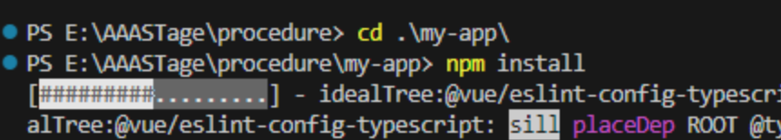

Procedure
I) Création du projet:
Se mettre dans l’emplacement souhaité, ouvrir le terminal et faire la commande de création d’un projet "electron vite"
npm create @quick-start/electron my-app -- --template vue
(Nous voulons utiliser typescript pour notre projet donc il faut l’activer
Il suffira de faire les commande suggérer ensuite
cd my-app
npm install

II) Ajout d’une bdd sqlite avec typeORM:
installer typeORM et les package necessaire
npm install typeorm
npm install sqlite3
npm install @swc/core
Il faudra rajouter swc pluging dans le fichier electron.vite.config.ts
import { resolve } from 'path'
import { defineConfig, externalizeDepsPlugin,swcPlugin } from 'electron-vite' // <-- ICI
import vue from '@vitejs/plugin-vue'
export default defineConfig({
main: {
plugins: [externalizeDepsPlugin(),swcPlugin()] // <-- ET ICI
},
preload: {
plugins: [externalizeDepsPlugin()]
},
renderer: {
resolve: {
alias: {
'@renderer': resolve('src/renderer/src')
}
},
plugins: [vue()]
}
})
Il faudra implémenter la base de donnée via typeORM du côté server (main)
vous pourrez commencez par faire une entité
import { Entity, PrimaryColumn, Column, DataSource } from 'typeorm';
@Entity()
export class Livres {
@PrimaryColumn()
isbn: number;
@Column()
titre: string;
@Column()
auteur: string;
@Column()
pages: number;
@Column()
resume: string;
}
on pourrra ensuite configurer une datasorce
const dataSource = new DataSource({
type: 'sqlite',
database: 'livres.db',
synchronize: true,
entities: [Livres],
});
Une fois que l'on a une enitée et le datasource nous pourrons commencer a construire des methodes permettant d'agir sur la base de donnée
Mais encore avant ca rajoutons l'initialisation et la fermeture de la base de donnée
// Initialise la connexion à la base de données au démarrage de l'application
dataSource.initialize().catch(error => console.error("Erreur lors de l'initialisation de la base de données :", error));
//...
//Ecrire les methodes ici
//...
// Ferme la connexion à la base de données lorsque l'application se termine
process.on('exit', () => {
dataSource.close().catch(error => console.error("Erreur lors de la fermeture de la connexion à la base de données :", error));
});
il ne reste plus qu'a ecrire les methodes poue sauvegarder un livre les charger etc
export const saveData = async (_json: JSON) => {
try {
const repository = dataSource.getRepository(Livres);
console.log(_json)
const livre = new Livres();
let jsonObj = JSON.parse(_json);
livre.isbn = jsonObj["nom"];
livre.titre = jsonObj["titre"];
livre.auteur = jsonObj["auteur"];
livre.pages = jsonObj["pages"];
livre.resume = jsonObj["resume"];
await repository.save(livre);
console.log("le livre à été sauvegardé");
} catch (error) {
console.error("Erreur lors de la sauvegarde: ", error);
}
};
export const updateData = async (_json: JSON,_isbn:number) => {
try {
const repository = dataSource.getRepository(livres);
let jsonConvert = JSON.parse(_json)
const livreUpdate = await repository.findOne({where:{isbn:_isbn}});
livre.titre = jsonObj["titre"];
livre.auteur = jsonObj["auteur"];
livre.pages = jsonObj["pages"];
livre.resume = jsonObj["resume"];
await repository.save(livreUpdate);
console.log("le livre a été modifié");
} catch (error) {
console.error("Erreur lors de la modification: ", error);
}
};
export const showData = async () => {
try {
const repository = dataSource.getRepository(livres);
const table = await repository.find();
console.table(table);
} catch (err) {
console.log("Erreur lors de l'affichage des données: ", err);
}
};
export const loadData = async () => {
try {
const repository = dataSource.getRepository(livres);
const table = await repository.find();
const jsonTable = JSON.stringify(table);
return jsonTable;
} catch (err) {
console.log("Erreur lors de l'envoie des données: ", err);
}
};
export const loadOneData = async (_isbn) => {
try {
const repository = dataSource.getRepository(livres);
const table = await repository.findOne({where:{isbn:_isbn}});
const jsonTable = JSON.stringify(table);
return jsonTable;
} catch (err) {
console.log("Erreur lors de l'envoie des données: ", err);
}
};
export const deleteRow = async (_isbn: number) => {
try {
const repository = dataSource.getRepository(livres);
const livreToDelete = await repository.findOne({where:{isbn:_isbn}});
if (livreToDelete) {
await repository.remove(livresToDelete);
console.log("le livre a été éffacé");
return true
} else {
return false
}
} catch (error) {
console.error("Erreur lors de la suppression: ", error);
return false
}
};
Chapitre 3) Requetes IPC:
Une fois la base de donnée nous allons préparer les requete IPC qui permettron d'agire sur la base de donnée coté server depuis le coté client
Nous allons créer un dossier IPC (par soucis d'organisation) dans le dossier main et y créer un fichier ipcLivre.ts
dans ce fichier nous allons y créer une class ipcLivres et une fonction static Initialize, qui sera apeller dans le fichier main.ts du projet coté "main"
(cela permet juste dene pas encombrer le fichier main.ts en ecrivant toute nos requette ipc dedans)
import { ipcMain } from "electron";
import { saveData , showData , loadData , deleteRow , loadOneData , updateData} from "../entity/Line";
export default class IPCsSubtitle{
static initialize(){
//Ecrire les reuette ipc ici
//...
}
}
Ces requette ferons la transmission des donnée depuis le renderer et permettrons l'apelle des methodes créer precédement dans l'entitée "livres"
static initialize(){
ipcMain.on('subtitle:SaveData',async (event, _json:JSON)=>{
saveData(_json);
});
ipcMain.on('subtitle:UpdateData',async (event, _json:JSON,_isbn:number)=>{
updateData(_json,_isbn);
});
ipcMain.handle('subtitle:LoadData',async (event)=>{
return loadData();
});
ipcMain.handle('subtitle:LoadOneData',async (event,_isbn)=>{
return loadOneData(_isbn);
});
ipcMain.handle('subtitle:ShowData',async ()=>{
showData();
});
ipcMain.handle('subtitle:DeleteRow',async (event,_isbn)=>{
return deleteRow(_isbn);
});
}
Ne pas oublier d'apeller la methode static dans le fichier index.ts du dossier main
import { app, shell, BrowserWindow } from 'electron'
import { join } from 'path'
import { electronApp, optimizer, is } from '@electron-toolkit/utils'
import icon from '../../resources/icon.png?asset'
import ipcLivres from './IPC/ipcLivres' // <-- IMPORTATION
function createWindow(): void {
const mainWindow = new BrowserWindow({
width: 900,
height: 670,
show: false,
autoHideMenuBar: true,
...(process.platform === 'linux' ? { icon } : {}),
webPreferences: {
preload: join(__dirname, '../preload/index.js'),
sandbox: false
}
})
mainWindow.on('ready-to-show', () => {
mainWindow.show()
})
mainWindow.webContents.setWindowOpenHandler((details) => {
shell.openExternal(details.url)
return { action: 'deny' }
})
if (is.dev && process.env['ELECTRON_RENDERER_URL']) {
mainWindow.loadURL(process.env['ELECTRON_RENDERER_URL'])
} else {
mainWindow.loadFile(join(__dirname, '../renderer/index.html'))
}
}
app.whenReady().then(() => {
electronApp.setAppUserModelId('com.electron')
app.on('browser-window-created', (_, window) => {
optimizer.watchWindowShortcuts(window)
})
createWindow()
ipcLivres.initialize() // <-- ICI
app.on('activate', function () {
if (BrowserWindow.getAllWindows().length === 0) createWindow()
})
})
app.on('window-all-closed', () => {
if (process.platform !== 'darwin') {
app.quit()
}
})
Chapitre 4) Créeation d'un component:
A present nous allons créer le component d'un livre, cette fois ci du coté renderer
Et l'apeller dans App.vue
//partie script de App.vue
import Livres from './components/Livres.vue'
export default{
data(){
return{
}
},
components:{
Livres,
}
}
<!-- partie template -->
<div>
<Versions/>
<Livres/>
</div>
<!-- partie style -->
@import './assets/css/styles.less';
Voici le component
// partie script de Livres.vue
import livre from '../class/livre.ts'
export default {
data(){
return{
}
},
async mounted(){
},
methods:{
handleChange(){
if(document.getElementById("isbn").value.trim().length != 0 &&
document.getElementById("titre").value.trim().length != 0 &&
document.getElementById("auteur").value.trim().length != 0 &&
document.getElementById("pages").value.trim().length != 0 &&
document.getElementById("resume").value.trim().length != 0){
console.log("tttt")
document.getElementById("buttonSave").disabled=false;
}else{
console.log("ffff")
document.getElementById("buttonSave").disabled=true;
}
},
async save(){
try{
let l= new livre(
document.getElementById("isbn").value,
document.getElementById("titre").value,
document.getElementById("auteur").value,
parseInt(document.getElementById("pages").value),
document.getElementById("resume").value
)
let jsonObject = JSON.stringify(l)
window.electron.ipcRenderer.send('livres:SaveData', jsonObject)
}catch(err){
console.error("Probleme lors de la sauvegarde",err)
}
}
}
}
<!-- partie template -->
<div id="cadre">
<label for="isbn">Isbn
<input @input="handleChange" type="text" id="isbn">
<label for="titre">Titre
<input @input="handleChange" type="text" id="titre">
<label for="auteur">Auteur
<input @input="handleChange" type="text" id="auteur">
<label for="pages">Pages
<input @input="handleChange" type="number" id="pages">
<label for="resume">Resumé
<input @input="handleChange" type="text" id="resume">
<button @click="save" id="buttonSave" disabled>Sauvegarder
</div>
<!-- partie style -->
#cadre{
display: flex;
flex-wrap: wrap;
flex-direction: column;
}
input,button{
width: 20%;
}
Chapitre 5) Integration de FFMPEG
Cela va permettre la conversion d'une video, afin de pouvoir l'exploiter et faire des interaction via IPC depui le renderer
Installer les package ffmpeg
npm install ffmpeg-static
npm install fluent-ffmpeg
npm install ffprobe-static
En premier lieu nous allons preparer la commande ipc pour recevoir convertir et renvoyer le lien de la vdeo
Dans un nouveau fichier ipcFfmpeg.ts mettez ce code
import { ipcMain } from "electron";
import ffmpeg from 'fluent-ffmpeg'
export default class IPCsFfmpeg{
static initialize(){
ipcMain.on('electron:SendVideo', (event, filePath) => {
// Logique de conversion FFmpeg ici
const filePathToSend = 'converti.mp4'
const outputFilePath = './src/renderer/src/video/'+filePathToSend;
const ffmpegProcess = ffmpeg(filePath)
.output(outputFilePath)
.on('start', (commandLine) => {
console.log(`Conversion en cours: ${commandLine}`);
})
.on('progress', (progress) => {
// Envoyer la progression à la fenêtre de rendu
event.sender.send('electron:progressPercent', progress.percent);
})
.on('end', () => {
console.log('Conversion réussie');
event.sender.send('electron:progressPercent', "100");
event.sender.send('electron:conversionFile', filePathToSend);
})
.on('error', (err) => {
console.error(`Erreur lors de la conversion: ${err.message}`);
})
.run();
})
}
}
Ne pas oublier d'appeler la methode Initialize() dans le fichier index.ts du main
Et maintenant on peut l'apeller depuis le Renderer via cette commande
Voici le component a créer
//partie Script du component Video.vue
export default {
data() {
return {
conversionProgress: null,
file:"",
videoFilePath:"src/video/",
};
}
,
methods: {
handleFileChange(event) {
this.file = event.target.files[0];
},
convertVideo() {
window.electron.ipcRenderer.send('electron:SendVideo', this.file.path);
}
,
updateSubtitle() {
this.currentLine[0]["texte"]=document.getElementById("zoneSubtitle").value;
let jsonObject = JSON.stringify(this.currentLine)
window.electron.ipcRenderer.send('subtitle:UpdateData',jsonObject,this.currentLine[0]["id"])
}
,
async langChange(){
this.subtitles = JSON.parse(await window.electron.ipcRenderer.invoke('subtitle:LoadData',document.getElementById("langSub").value));
this.handleTimeUpdate();
}
}
,
async mounted() {
document.getElementById("videoFile").src=this.videoFilePath+"converti.mp4"
window.electron.ipcRenderer.on('electron:progressPercent', (event, progress) => {
this.conversionProgress = progress;
});
window.electron.ipcRenderer.on('electron:conversionFile',(event, filePath) => {
this.videoFilePath+=filePath
document.getElementById("videoFile").src=this.videoFilePath
})
},
};
<!-- Partie Html -->
<div>
<div>
<input type="file" @change="handleFileChange" accept="video/*">
<button @click="convertVideo">Convertir
<div v-if="conversionProgress !== null" class="progress-container">
<progress class="progress-bar" :value="conversionProgress" max="100">
<span class="progress-label">{{ conversionProgress }}%
</div>
</div>
<div id="cadre">
<video ref="myVideo" id="videoFile" controls width="640" height="360">
</div>
</div>
<!-- Partie Style -->
#cadre{
border: 3px solid gray;
}
#zoneSubtitle{
width: 30%;
overflow-block: auto;
}
.progress-container {
text-align: center;
margin-top: 20px;
}
.progress-bar {
width: 100%;
}
.progress-label {
margin-top: 10px;
display: inline-block;
font-size: 16px;
font-weight: bold;
}
Chapitre 6) Insertion du fichier srt
pour finir un exemple de component qui lis un fichier srt
//Partie script
import {Lines} from '../../model/Lines.ts'
export default {
data() {
return {
srtContent: null,
lines:null
};
},
methods: {
srtConvert(){
let subtitleLines = this.srtContent.split('\n\n')
this.lines = new Lines(subtitleLines,"video_a_choisir",document.getElementById("langSelect").value);
this.lines.dbSave();
}
,
async loadData(){
try {
// Charger les données avec IPCRenderer
return await window.electron.ipcRenderer.invoke('electron:LoadData');
} catch (error) {
console.error('Erreur lors du chargement des données :', error);
}
}
,
handleFileChange(event) {
const file = event.target.files[0];
if (file) {
const reader = new FileReader();
reader.onload = () => {
// Une fois le fichier chargé, vous pouvez accéder à son contenu ici.
this.srtContent = reader.result;
};
reader.readAsText(file);
}
},
},
};
<!-- Partie HTML -->
<div>
<div id="srtControl">
<select name="langue" id="langSelect">
<option value="french">Francais
<option value="english">Englais
<option value="japanese">Japonais
</select>
</div>
<button @click="srtConvert">Save
<input type="file" @change="handleFileChange" />
<div v-if="srtContent">
<h2>Contenu du fichier SRT :
<pre>{{ srtContent }}</pre>
</div>
<button @click="test">Load
</div>